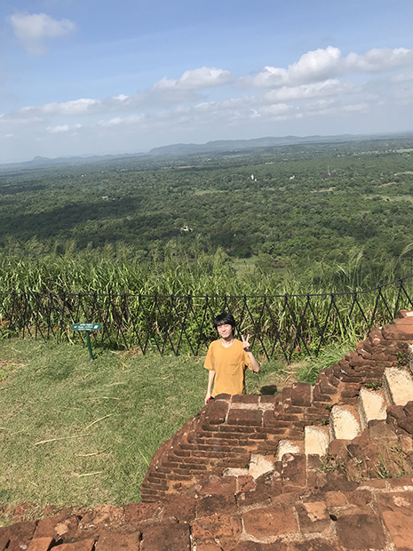

シーギリヤロック！
「納得のいく留学をすることができました。満足です。
この留学プログラムの不安などは、特にありませんでした。
マンツーマンレッスンをコストパフォーマンス良く受けられるので、参加を決めました。
レッスンは自由にやらせてもらえたので自分のペースでできて良かったです。
ちょうどスリランカに滞在中は、新型コロナウィルスの感染対策でロックダウンとなり、ホームステイ先から１歩も出れないことがありました。
過酷ではありましたが、人生において良い経験になりました。
ホストファミリーは、とても優しく接して下さったので良かったです。」
天気や時間帯によって温かいシャワーが浴びられない（太陽光発電の為）ので、その辺りは覚悟しておいた方が良いと思いました。
必要なものは、現地で調達できたので特に困りませんでした。
いずれにせよ貴重な経験ができたことには変わりありません。
一度だけ行けたシーギリヤロックは想像を遥かに超えるほど素晴らしかったです。
今後、スリランカへは、観光で行ってみたいと思います。
今回の留学は、最も人生を変えた海外経験であると言えます。
英語は苦手でしたが、今回を機にそれを払拭し、英語学習へのモチベーションが向上しました。
目標にしていた『英語で日常会話ができるようになる』『発音の機構を理解する』『TOEICで800点を超える』も全て達成できたので満足です。
ありがとうございました。」

広がるジャングル！